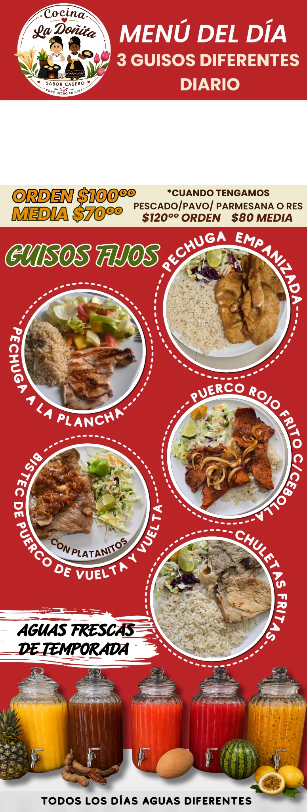
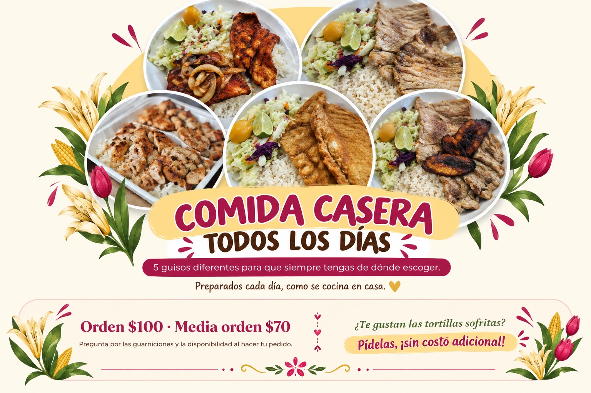
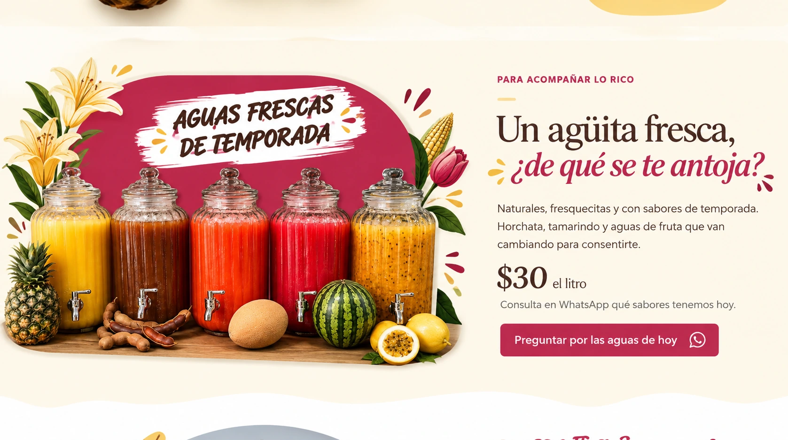
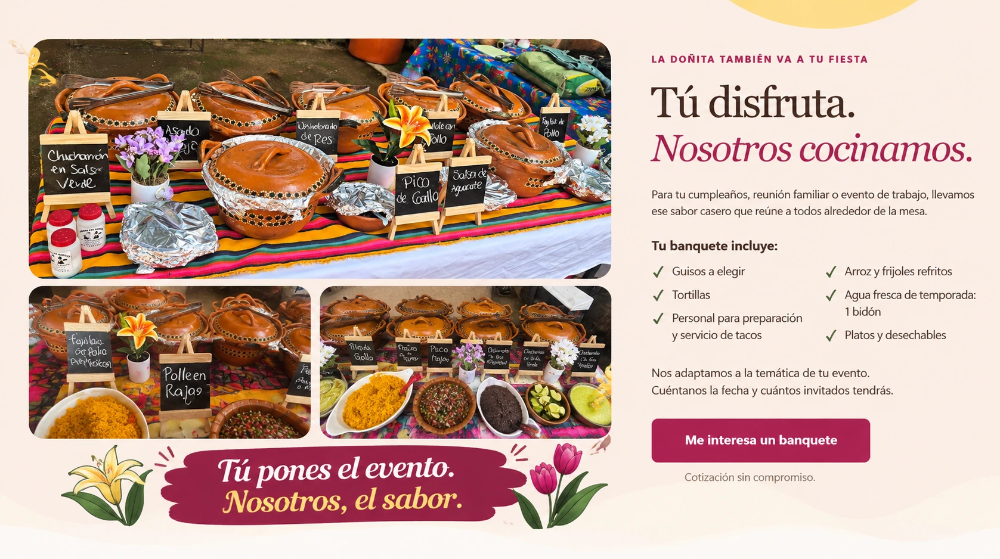
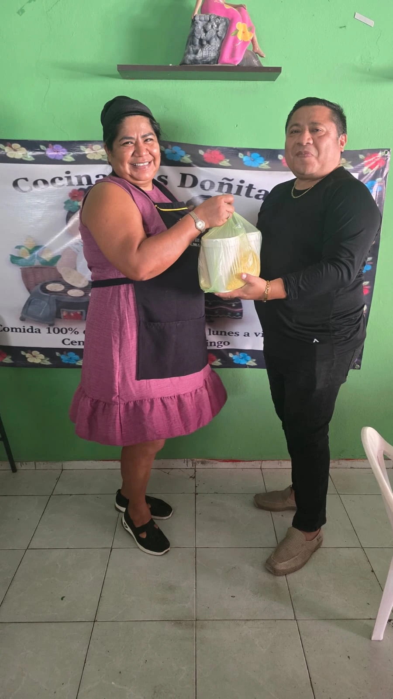

Pechuga empanizada
Doradita por fuera, para consentir el antojo.
Pedir por WhatsAppDE NUESTRA COCINA A TU MESA
Pásale, aquí siempre hay algo rico para ti. Comida casera, porciones con cariño y ese sazón que te hace volver.
Comedor y pick up en todos nuestros horarios.
Envíos a domicilio en comidas y cenas.

EMPIEZA LA MAÑANA CON ALGO RICO
Lunes a viernes · 7:00 am a 10:30 am
Los desayunos se disfrutan aquí o se recogen; no tienen envío a domicilio.
Un antojito calientito y el sazón de nuestra cocina para empezar tu día con gusto.
Pedir mi desayunoEL ANTOJITO DE LA NOCHE
Viernes a domingo · 7:00 pm a 10:00 pm
Para cerrar el día con algo rico, aquí te esperamos con nuestros antojitos.
Pedir mi cena¿No puedes venir? La Doñita te lo lleva.

PARA ACOMPAÑAR LO RICO
Naturales, fresquecitas y con sabores de temporada. Horchata, tamarindo y aguas de fruta que van cambiando para consentirte.
$30 el litro
Consulta en WhatsApp qué sabores tenemos hoy.
Preguntar por las aguas de hoyAQUÍ TE ESPERAMOS
Lunes a viernes
7:00 a 10:30 amSin envío a domicilio.
Lunes a viernes
10:30 am a 4:00 pmÚnicamente viernes a domingo
7:00 a 10:00 pm
Tú pones el evento.
Nosotros, el sabor.
LA DOÑITA TAMBIÉN VA A TU FIESTA
Para tu cumpleaños, reunión familiar o evento de trabajo, llevamos ese sabor casero que reúne a todos alrededor de la mesa.
Nos adaptamos a la temática de tu evento. Cuéntanos la fecha y cuántos invitados tendrás.
Me interesa un banqueteCotización sin compromiso.

AQUÍ TAMBIÉN CONSENTIMOS A NUESTRA COMUNIDAD
En La Doñita hacemos seguido dinámicas en nuestras redes y regalamos raciones de comida. Es nuestra manera de agradecerte por acompañarnos y recomendar nuestra cocina.
Seguirnos, compartir y comentar puede ser parte de la dinámica. En cada publicación te contamos cómo participar y qué puedes ganar. ¡Estate pendiente para que no se te pase la próxima!
DE NUESTRA CASA, CON CARIÑO
Una comida hecha con amor se nota desde el primer bocado. Aquí nos gusta que comas rico, que te sientas en casa y que vuelvas con gusto.
Con cariño, La DoñitaCocina La Doñita
Calle 75B LB, Croc, 97370 Kanasín, Yucatán.
Enfrente de Farmacia Guadalajara.
Desayunos: comedor y pick up.
Comidas y cenas: comedor, pick up y a domicilio.
Escríbenos para confirmar la ubicación y consultar la cobertura de entrega.
Pedir ubicación